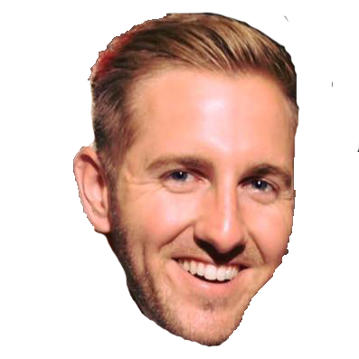
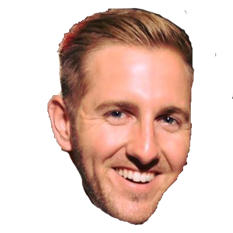
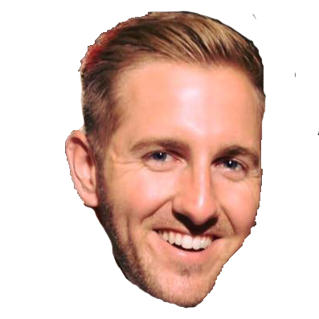
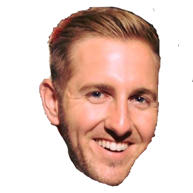

Weekly Power Rankings


 




Owner: Forrest Olson
2016 Record: 5-0
Position Last Week: 1
It’s so much more fun to write about bad teams. There’s no story here. I’m already bored. Even in a piss poor game from the Bengals Candy gets a solid 21 points. Candy led me last year and how quickly I forgot…baby come back. Did anyone else see the replays of Cam walking into the end zone and because of that he gets wacked when if he runs he would have made it in easy and untouched. Cam’s CTE might end up causing TAIMEJ a championship in the end, but at least for now he is a good reminder for Forrest to keep the pedal to the metal cause the second you start to show off you get wacked in the head, spend your nights sniffing glue, beat your family, and drive into on-coming traffic. Kind of sounds like all things he will do anyhow, except for the fact that his red headed obese children will be able to whoop his ass. Too far? Maybe you shouldn’t have been busy tonight.

Owner: Frank Herrera
2016 Record: 4-1
Position Last Week: 3
Lucky me I got to watch MNF as my soul was crushed not once but twice. As if you needed to win. You know what this would have meant for us, FOR ALL OF US. All year we could have looked back on this moment and bashed you for losing to Kyle. It wouldn’t have mattered that you were going to finish with a very respectable week regardless. But you just couldn’t let it happen. Honestly, if we were doing these write ups every week since last year I’m pretty sure yours would be the most boring every time. Larry Fitzgerald blah blah blah Devonta Freeman blah blah Greg Olson blah blah blah. Pssh, I thought Democrats pulled for diversity and change.

Owner: Danny Moore
2016 Record: 4-1
Position Last Week: 2
You know what? Fuck everyone and eat my ass. I can’t even begin to think of the reasons this kid won. But let me tell you cause no one else wanted to do the write up and Dan’s probably too busy painting things to even care that this is going to be about me and not him. Eli can’t hit a wide open man for a 65 yard TD and the next play fumbles the ball, 8-9 point swing. Jordan Howard did have a second TD in his game but it got called back for a penalty, 6+ points. Wouldn’t you know it, Steve Smith left the game injured, infinity points. Nobody told me what clearly everybody knew about Kyle Rudolph while Dwayne Allen found the end zone, 12 points. And Chase fucking Keenam. All he had to do was stop throwing the ball to the Bills Defense, too many points. All Mike Evans had to do was not find the end zone and maybe we all wake up feeling a little better about ourselves. The only thing the Butt Tuggers can do now is make sure they continue to win. There are some teams us losers just won’t catch and this seems to be one as well.

Owner: Nate DuBois
2016 Record: 3-2
Position Last Week: 6
Here we are going to talk about Change. I usually don’t condone change (#fuckObama). Especially changing names. Caleb is what we’ve all known for too long and has been the one thing you could have solace knowing that would always be the case. But times are changing (unlikely,#fuckDean) and Radney’s team has finally found their stride. And what a change it has been – last time I wrote about this team they came off a 54.5 point embarrassment. Now the Corn on the COBB has become a team to reckon with and with this momentum looks like a solid bet to make the 6 man playoff. So keep changing your name should you keep putting up solid performances. But please for the love of God (Caleb Lol), unless you are trading with me, stop changing your team via trade. That has not seemed to work out for you…like at all.

Owner: Garett Prusha
2016 Record: 3-2
Position Last Week: 4
I am not sure the Savages know what week it is? I don’t care what happens in the first four weeks of the season or who the team is matched up against in the current week. Unless you have a cast of absolute studs you better not bench your number 1 pick. Much live Phillip Rivers has given up literally every 4th quarter lead, that move wreaks of giving up. Lucky for the slow started teams under .500 it seems Garett’s team has finally run out of luck. It might be time to take the team out for a pick me up meal at Panchero’s (Dubuque of course), cause for once in my quarter century on this earth I am not #TeamJack.

Owner: Chris Noonan
2016 Record: 2-3
Position Last Week: 8
If there is one thing Dwayne did right this week it was building up the confidence of a man just in time to watch crawl him crumble into the boy he is, just a little boy, playin’ with his dick when he’s nervous. This isn’t a chance for one fantasy team to prove themselves and the other to fuck off into oblivion. This is to right the ship. Paul Walker is still showing up in movies and still living strong every day in the GroupMe, the dude playin’ the dude, disguised as another dude! We’re all sick of it and it ends this weekend. It’s time for Dean to suck my unit. A look ahead to the Week 5 match ups and projections shows a team that is going to struggle to break 100 and an asshole that is going to bleed.

Owner: Kevin Jachim
2016 Record: 2-3
Position Last Week: 5
Let us not sit here and act like it was almost an impossible feat for this team to come out on top in Week 5. After the BOWP this team had to deal with injuries and serious life contemplations. And if that wasn’t enough the owner runs out of town without a hint of interest in his team’s performance to not catch it from his ex. If you’re going to go out of town with your ex you gotta catch it, probably don’t even need a mitt to catch it. Speaking of mitts, how about Conor Gillespie’s bat? I know that was a stretch but it’s an even number year and I am going to have a front row seat to watch Dwayne’s tears tonight. Giants in 5. White Sox in 2005. My fantasy team next year.

Owner: Ryan Schneider
2016 Record: 1-4
Position Last Week: 7
I will not speak on the past week for the Baja Men. Think ive already done that. I am going to let this week do the talking. In the name of the Father, the Caleb, and the Holy Spirit. As it was in the beginning and always shall be and if it shalnt then I Zack Siler will suck the salt from Dean Sampson’s balls.
Owner: Chris Comstock
2016 Record: 1-4
Position Last Week: 9
When it comes to sales some often refer to the 3 T’s: territory, timing, and talent. Territory doesn’t fucking tie into this at all because there are no divisions because this is a stupid fucking league. Like oh last year we had divisions and 1 ppr and this year fuck everybody cause those things have changed, what’s next? Anyway, Toph finally put together a respectable score over 100 that would have beat at least 4 other teams in the league – unfortunately for him the timing wasn’t there. Much like I wasted the talents of Deangelo Williams, Toph has yet to capitalize on the return of Le’Veon Bell. I believe the last T was talent and there isn’t much on this piece of shit squad so let’s move on…

Owner: Kyle Marxkors
2016 Record: 0-5
Position Last Week: 10
Put a fat rabbit on a craftmatic. Is what I would have said if my beautiful Peaches pulled off the Week 5 upset. Instead the Owen Fiveman is still reaching for that first W of 2016 but the league is now on notice as a once nonexistent owner has returned from playing catch in his back yard with Sara much like Tom with Giselle. One thing we now know is that his team is not to be overlooked. But the truer question still remains – which is the more beautiful couple?